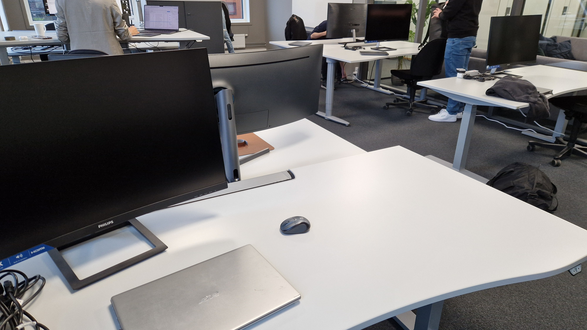

Swipload er et oppstartsselskap som har som mål å digitalisere og modernisere
transportplanlegging gjennom administrasjonsprogramvare.
De ønsker å gjøre det så enkelt som mulig for selskaper å administrere og håndtere
transportordrer, samtidig som de får bedre oversikt over logistikkprosessene sine.
Gjennom årene har Swipload samarbeidet med flere ledende norske investorer for å nå sine
mål. De har et mangfold av partnere, inkludert den
Stavanger-baserte bedriften DSD, programvareselskapet 24SevenOffice, startup-inkubatoren
The Factory, og flere andre.
For øyeblikket bruker flere velstående og store bedrifter Swiploads produkter for å
effektivisere sin transportlogistikk og administrasjon.
Flere av disse kundene har rapportert økt effektivitet og er svært fornøyde med
Swiploads programvare. Blant disse bedriftene finner vi E.A. Smith, Optimera, Doka, og
mange flere.